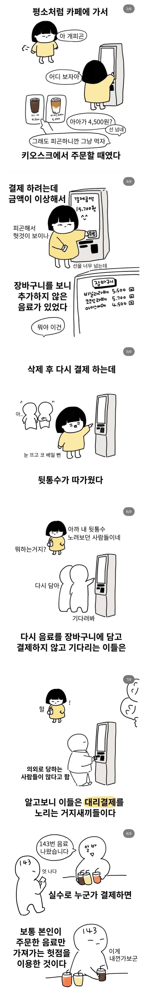

요즘 유행이라는 키오스크 먹튀 수법
댓글
순수 혐오 유발만화라 작가 좀 병원 가봐야할거같음.. 키오스크 오랫동안 결제 안하면 메인으로 넘어감..
촌경 갈기고싶노
주작~
안가져가고 딴사람이 가져가는데 알바가 가만히 있을리가
그리고 키오스크는 주문하다 냅두면 초기화면으로 넘어감
이거 버스탈때도 시도하는 사람 겪어봄.
앞에 두명이요 하고 타더니 5초 기다려도 따라 타는 사람이 없길래, 모르는 사람이라고 내꺼 찍고 탐.
버스 기사가 뒤보면서 그 사람에게 찍으라고 뭐라 하니까 찍었다고 실랑이 벌이다 그냥 출발함.
애초에 담긴게 아래에 보이는게 보통일텐데 처음 시작 화면도 다르고
미친 지랄 주작ㅋㅋㅋㅋㅋ
유행은 씨발. 그냥 병신 한명이 하던거 본거 뿐이겠지
저런거 보통 영수증에 다 나오지 않나?
내가 기억하기로 대부분의 키오스크가 스크린 계속 안 만지면 주문 화면 초기화 됐던 걸로 기억하는데 ㅋㅋㅋㅋ
개구라지 ㅅㅂ 먼ㅋㅋ
누가 고르고있던 화면이랑 처음이랑 완전다르고
타임아웃도 있는데
떠올린 아이디어 자체가 굉장하네
작가가 하고싶었나봄
장바구니 바로 표시되서 거기에서 플러스 눌러서 같은거 여러개 시킬때가 많은데 저게 되겠냐고 ㅋㅋㅋ
대충 들은이야기를 재구성해 어쩌고 실제 사례를 바탕으로 어쩌고 직접 본 것은 아니지만 어쩌고
이상 뚝딱
겠냐 ㅋㅋㅋㅋ 바로 쫓겨나지
어느 회사 키오스크든 1분 넘으면 리셋됨
주작
작가가 키오스크 리셋을 생각 못했나 본데
오 키오스크 경제학!!
별의별 거지가다있네
100% 헛소리... 비싼 음식도 아니고, 커피숍이면 전체 금액이 2~3배 뛰는데 말이 됨?
결제하기에서 일정시간 결제 안하면 초기화 되면서 메인화면으로 가야 하는데, 몇몇 키오스크가 병신이라
다음 사람이 본 화면에 '카드를 넣어주세요' 되어있어서 셀프주유소, 다이소처럼 카드 먼저 꽃아야 하나 싶어서 꽃으면 결제됨